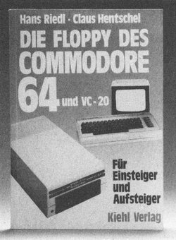
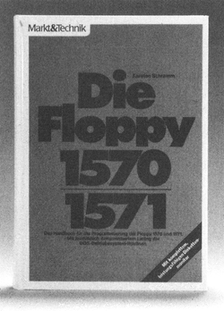
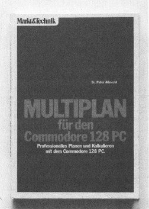
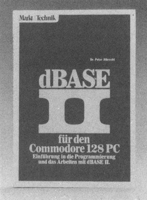
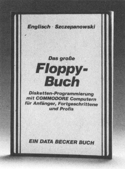

Buchbesprechungen
Die Floppy des Commodore 64 und VC-20

Schon nach kurzer Zeit merkt jeder, der sich mit dem VC-1541-Laufwerk beschäftigt, daß das mitgelieferte Handbuch nur außerst dürftige Informationen über das Arbeiten mit der Floppy-Station und ihre Arbeitsweise gibt. So ist es erfreulich, daß rührige Verlage den vielen Floppy-Besitzern die Chance eröffnen, mehr über ihr Laufwerk zu erfahren und dieses optimal zu nutzen. Genau diesem Zweck dient dieses, von zwei Praktikern geschriebene Buch. Nach dem Vorwort versteht sich das Buch als Ergänzung zum Original-Handbuch. Gegebenenfalls wird deshalb zur Vermeidung von Wiederholungen auf das Handbuch verwiesen. Anleitungen für Wartungs- und Reparaturarbeiten werden nicht gegeben. Leicht verständlich, aber gründlich erläutern die Autoren dagegen die Arbeitsweise der VC 1541, die Basic-Befehle zur Diskettenverwaltung und zur Dateibearbeitung. Von besonderem Interesse dürften die Ausführungen über Direktzugriffe auf die Diskette und deren Anwendungen sein. Ausführlich gehen die beiden Autoren anschließend auf die Programmierung der VC 1541 in Maschinensprache und die damit verbundenen Vorteile ein. Dabei bleiben sie nicht in der Theorie stecken, sondern geben jeweils ein instruktives Beispiel für die praktische Anwendung der besprochenen Routine. Diese Programmbeispiele sind in 6502/6510-Assembler geschrieben. Aus der Vielzahl der vollständig abgedruckten Programme im Anhang seien hier besonders die Kopierprogramme für ganze Disketten und für einzelne Programmdateien, für sequentielle und relative Dateien sowie der Disk-Monitor erwähnt. Diese jeweils etwa 150 Zeilen langen Programme sind gut erklärt und in Basic geschrieben, enthalten aber zur Steigerung der Geschwindigkeit einige Maschinensprache-Routinen. Ärgerlich ist dabei nur, daß keine käufliche Diskette mit den vorgestellten Programmen vorliegt und dem Leser das mühsame Abtippen nicht erspart bleibt. Sonst ist das Buch aber jedem Floppy-Besitzer, der mehr als nur Programme laden und speichern möchte, zu empfehlen.
(Dieter Hein/bj)Info: Dipl.-Phys. Dr. H. Riedel und Dipl.-Mathem. C. Hentschel, Die Floppy des Commodore 64 und VC-20, Friedrich Kiehl Verlag GmbH, 156 Seiten, ISBN 3-470-80431-1, Preis: 29,80 Mark
Die Floppy 1570/1571

Dieses im Markt&Technik Verlag erschienene Buch behandelt auf das ausführlichste die beiden Floppystationen 1570 und 1571 von Commodore. Das Besondere beider Laufwerke ist die Tatsache, daß sie mehrere Diskettenformate lesen und auch schreiben können, und gerade dieser Sachverhalt bildet den Schwerpunkt des Buches.
Neben den, auch in der Anleitung von Commodore stehenden, Tatsachen, die für den Einsteiger wichtig sind, widmet sich das Buch vor allem den Bereichen, die in sonst vorhandener Lektüre gar nicht oder nur unvollständig und schwer verständlich behandelt werden.
Das Kernstück des Buches ist dabei das ausführlich und gründlich dokumentierte DOS-Listing, das keine Wünsche mehr offenläßt. Der beschreibende Text ist so ausführlich, daß er auch ohne die nebenstehenden Assemblerbefehle zusammenhängend gelesen und verstanden werden kann.
Für den Anfänger beinhaltet das Buch alle wichtigen Grundlagen, die ausführlich und leicht verständlich erklärt sind. Der fortgeschrittene Programmierer findet in dem Buch alle wichtigen Einzelheiten, die ihn zum Profi werden lassen. Der Profi schließlich erhält ein rundum gelungenes Nachschlagewerk, das, mit vielen Tabellen und Verzeichnissen ausgestattet, ein hervorragender Helfer bei allen Problemen ist.
Insgesamt ein sehr sorgfältig zusammengestelltes Werk, das kaum noch Wünsche bezüglich Informationen zu den Laufwerken 1570 und 1571 offenläßt.
(Martina Müller/bj)Info: Karsten Schramm, Die Floppy 1570/1571, Markt&Technik Verlag AG, Hans-Pinsel-Str. 2, 8013 Haar bei München, 470 Seiten, ISBN 3-89090-185-9, Preis: 52 Mark
Multiplan für den Commodore 128 PC

Hauptsächlich dem professionellen Anwender soll mit diesem Werk geholfen werden, einen schnellen und leichtverständlichen Einstieg in das Arbeiten mit Multiplan zu erhalten. Nach einer kurzen Einführung, in der die generellen Möglichkeiten des leistungsfähigen Kalkulationsprogramms beschrieben werden, wird der Anwender schrittweise in die Eigenheiten von Multiplan eingeführt. Nach einer allgemeinen Beschreibung der möglichen Felder wird im weiteren – aufbauend auf dem bisher Gelernten – weiter ins Detail gegangen. Nachdem auch die Handhabung von Formeln vermittelt ist, lernt der Anwender an Kalkulationsbeispielen sehr schnell, mit Multiplan umzugehen. Als vorteilhaft erweist sich der modulare Aufbau der Beispiele, das heißt, sobald neue Themen erschlossen werden, findet das vorhergehende Beispiel Verwendung und wird entsprechend erweitert. Für geübte Multiplan-Anwender steht am Ende des Buches eine detaillierte Funktionsübersicht zur Verfügung, die zusätzlich noch durch eine Kurzbeschreibung der CP/M-Befehle ergänzt ist. Für Anwender, die Multiplan konsequent einsetzen wollen, erweist sich das vorliegende Werk sicherlich bald als unentbehrliches Nachschlagewerk, egal ob Anfänger oder Profi.
(Martina Müller/bj)Info: Dr. Peter Albrecht, Multiplan für den Commodore 128 PC, Markt&Technik Verlag AG, 226 Seiten, ISBN 3-89090-187-5, Preis: 49 Mark
dBase II für den Commodore 128 PC

In leicht verständlicher Form vermittelt der Autor anhand von Beispielen einen Einstieg in das Arbeiten mit dBase II. Die Vorstellung neuer Befehle erfolgt jeweils im Rahmen einer bestimmten Anwendung. Dadurch ist es möglich, sich weitaus schneller in die komplexen Gebilde »Dateiverwaltung und Dateiverwaltungssprache« einzuarbeiten. Von der Erstellung einer Datei, dem Anfügen und Ändern beliebiger Daten, über den gezielten Zugriff auf Daten und Datenfelder mit verknüpften Suchbedingungen, dem Ändern von Dateistrukturen, Sortieren, Indizieren und Erstellen von »Report«-Dateien bis hin zur Stapelverarbeitung mehrerer Dateien, Programmen in dBase II und der Kommunikation mit anderen CP/M-Programmen ist in diesem Buch alles enthalten, was für den Einsteiger eine wertvolle Arbeitshilfe und den Fortgeschrittenen ein wichtiges Nachschlagewerk darstellt. Nach dem Durcharbeiten des Buches im direkten Dialog mit dem Programm ist man in der Lage, individuelle Anwendungen mit dBase II zu realisieren und mit dem vermittelten Wissen selbst die sehr komplexen Möglichkeiten zu nutzen, zumindest sich in diese Gebiete mit dem Handbuch von dBase II schnell einzufinden.
(Martina Müller/bj)Info: Dr. Peter Albrecht, dBase II für den Commodore 128 PC, Markt&Technik Verlag AG 1985, 280 Seiten, ISBN 3-89090-189-1, Preis: 49 Mark
Die Floppy 1541
Zu den etablierten Standardwerken über »die Floppy 1541« gehört das gleichnamige Buch von Karsten Schramm, der den Lesern als Autor des Floppy-Kurses und als Redakteur des »64'er« kein Unbekannter ist. Hier plaudert ein Profi aus seiner Trickkiste. Denn bei diesem Floppy-Buch wurde der Schwerpunkt auf die Themen gelegt, bei denen andere aufhören.
Dennoch ist das vorliegende Buch nicht nur für Profis geeignet: Wer bisher nur die Befehle LOAD und SAVE mit seiner 1541 in Verbindung bringen konnte, der erfährt hier, wie man sequentielle, relative und Direktzugriffs-Dateien realisieren und verwenden kann.
Einige der weiteren Themen: Fehler im Commodore-DOS werden offengelegt, der serielle Bus wird unter die Lupe genommen und nach Hypra-Load-Manier beschleunigt. Methoden zur Rettung von verlorengegangenen Daten und fehlerhaften Blöcken werden vorgestellt. Und dies sind noch längst nicht alle der angesprochenen Bereiche. Das Allerbeste an diesem Buch ist allerdings das dokumentierte Listing des 1541-ROM. Praktisch jeder einzelne Maschinenbefehl wurde mit einem erläuternden Text versehen, weiter gibt es zu jeder der rund 400 Einzelroutinen des DOS einen kleinen einleitenden Text, dem dann die ausführliche Dokumentation neben dem Assembler-Listing folgt.
Die Dokumentation, die fast die Hälfte des Buches in Anspruch nimmt, wird von einer ebenso ausführlichen RAM-Belegung ergänzt. Mehrere nützliche Programme und ein ausführliches Stichwortverzeichnis runden das äußerst positive Gesamtbild ab. Die Diskette mit allen abgedruckten Programmen kann zu einem Preis von 29,80 Mark separat bestellt werden. Das eindeutige Urteil: Ein Floppy-Buch, das im Bücherschrank eines 1541-Besitzers nicht fehlen sollte.
(Boris Schneider/ev)Info: Karsten Schramm, Die Floppy 1541, Markt&Technik 1985, 434 Seiten, ISBN 3-89090-098-4, 49 Mark, Preis der Diskette zum Buch: 29,80 Mark.
C 1571 & 1570: Das große Floppybuch

Das im Buchtitel enthaltene Prädikat »groß« verdient dieses Buch von Data Becker sicherlich, denn mit 583 Seiten ist es ein umfangreiches Werk.
Die große Stärke des Buches ist das rund 350 Seiten umfassende DOS-Listing, das zudem eine Cross-Reference enthält. Es ist sehr gewissenhaft dokumentiert und glänzt durch gute optische Aufmachung. Anwendungen werden direkt anhand von Beispielen erklärt. Unter anderem befindet sich im Buch ein Programm zum Analysieren von MFM-Formaten, welches Informationen über die Anzahl der Byte pro Sektor, der Tracknummern und ähnlichem liefert. Da dieses und ähnliche Programme in Basic geschrieben sind, lassen sie sich auch für »Nicht-Assembler-Programmierer« nachvollziehen und gegebenenfalls ändern. Die Neuauflage dieses Buches wurde hinsichtlich der Rechtschreibung überarbeitet. Die diesbezüglich geäußerte Kritik in Ausgabe 4/86 ist also gegenstandslos geworden. Weiterhin sind zur gleichen Ausgabe zwei Berichtigungen vorzunehmen: Der Preis des Buches wurde fälschlicherweise mit 69 Mark angegeben. Der tatsächliche Preis beläuft sich jedoch auf 49 Mark, der Preis der Diskette mit Beispielprogrammen 29 Mark. Abschließend ergibt sich ein positiver Gesamteindruck, sowohl hinsichtlich des Preis-Leistungsverhältnisses, als auch der Fülle von Informationen.
(Florian Müller/ev/bj)Info: Rainer Ellinger, C1571&1570: Das große Floppybuch, Data Becker, 583 Seiten, ISBN 3-89011-124-6, Preis: 49 Mark, Diskette mit Beispielprogramm: 29 Mark
Die Dateiverwaltung für den C 64 & C 128
»Die Dateiverwaltung für den C 64 & C 128« enthält eine gelungene Mischung aus Lehrbuch und Software. Das durch Menütechnik benutzerfreundliche Dateiverwaltungsprogramm ist übersichtlich in Unterprogrammen geschrieben. Das Buch erläutert ausführlich und gut verständlich das Prinzip der Datenverwaltung und alle Teile der in Basic und Assembler geschriebenen Routinen. Durch Verwendung einer Index-sequentiellen Datei wird schnelles Durchsuchen möglich. Vorgestellt wird eine Adreßverwaltung, die vorgeschlagene Eingabemaske kann aber leicht abgeändert werden. Dem Leser wird empfohlen, vorgegebene Routinen in eigene Programme zu übernehmen. Nette Ratschläge, was dabei besonders zu beachten ist, machen solche Vorhaben leicht. Erfreulich ist es, daß für das Programm auf dem C 128 die Vorteile des komfortableren 7.0-Basic verwendet wurden. Besonderen Aufwand erforderte das Neuschreiben der Assemblerroutinen wegen des Bank-Switchings. Leider ist keine Möglichkeit vorgesehen, auf dem Bildschirm oder beim Druck die deutschen Umlaute und »ß« auszugeben. Gerade für ein Adressenverwaltungsprogramm ist diese Option jedoch unabdingbar. Vermißt wird auch ein Hinweis, ob und wie die erstellten Dateien von anderen Programmen (Textverarbeitung?) benutzt werden können.
Die zum Buch erhältliche Diskette kann zu einem Preis von 29 Mark einzeln bestellt werden.
Mit dem Programm läßt sich recht gut und schnell arbeiten. Was einen stört, kann man wegen der genauen Erklärungen selbst verbessern. Für die eigene Programmierung kann der Leser viel lernen und schöne Routinen übernehmen.
(D. Hein/ev/bj)Info: Said Baloui: »Die Dateiverwaltung für den C 64 & C 128«, Data-Becker, 272 Seiten, ISBN 3-89011-103-3, Preis 39 Mark, Diskette 29 Mark
Floppy VC 1541
Schon mancher Besitzer der Commodore-Floppy-Station hat mit der 1541 Ärger gehabt. Zu anfällig ist die Mechanik. Reparaturen in der Werkstatt dauern lange und kosten viel Geld. So ist es kein Wunder, daß viele 1541-Besitzer versuchen, notwendige Pflege- und Reparaturarbeiten selbst durchzuführen. Daß Eingriffe in die Floppy-Station nur nach Ablauf der Garantiezeit und von Leuten, die Erfahrung im Umgang mit hochempfindlichen Geräten haben, gemacht werden dürfen, kann nicht oft genug betont werden. Die vermeintliche Einsparung könnte sich leicht ins Gegenteil verkehren.
Die in den Kapiteln 1 und 2 beschriebenen Pflege- und Überwachungsarbeiten können als Wartung mit Hilfe der genauen Anleitungen und der vielen Zeichnungen im Buch von jedem, der nicht zwei linke Hände hat, ausgeführt werden. Das dritte Kapitel ist dem Justieren des Schreib-/Lesekopfes gewidmet. Sehr genau wird dabei geschildert, wie mit Hilfe des auf der Demo-Diskette befindlichen Programmes »Display T&S« geprüft werden kann, ob der Stopanschlag für die Spur 1 richtig eingestellt ist und ob sich der Schreib-/Lesekopf über alle Spuren korrekt bewegt. Mit Hilfe des Buches muß man den Stopanschlag gegebenenfalls um 0,1 bis 0,35 mm verstellen, noch schwieriger ist die Justage des Schreib-/Lesekopfes, obwohl das Buch genau beschreibt, wie man dabei mit oder ohne Oszilloskop vorgehen muß. Vier Programmlistings für Programme zum Erstellen einer Spureinstellungsdiskette, zur Spureinstellung, für einen Schreib-/Lesetest und zur Geschwindigkeitseinstellung können abgetippt werden und helfen dann bei den angeführten Arbeiten.
Für den Fachmann sehr nützlich ist die ausführliche Darstellung der Elektronik und Digitaltechnik.
(D. Hein/ev)Info: Reinhold Herrmann, Floppy VC 1541, Data Becker 1985, 220 Seiten, ISBN 3-89011-079-7, Preis 49 Mark